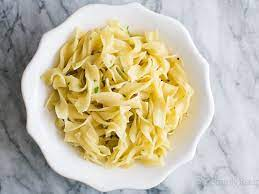

Buttered Noodles recipe
,
Description
Saucy, buttered noodles are simple to make and perfect to serve either as-is or alongside steak, chicken, or meatballs. Butter, Parmesan cheese, salt, and pepper are all you need for this quick and easy, kid-friendly dish, although fresh herbs and a little lemon juice could be added to amp up the flavor. It's such a delicious recipe, yet I get many questions on how to make it.
Ingredients
- Noodles,
This recipe calls for fettuccine noodles, but you could use any noodles you have on hand, from penne to spaghetti.
- Butter,
You can use salted or unsalted butter. Since you'll add more salt at the end, you might want to opt for unsalted (depending on your taste, of course).
- Parmesan,
Grated Parmesan cheese takes this dish up a notch. Buttered noodles don't technically require cheese, so you can leave it out if you want.
- Salt and Pepper,
Finish off this easy buttered noodles recipe with salt and ground black pepper.
Steps
- Fill a large pot with lightly salted water and bring to a rolling boil. Stir in fettuccine, bring back to a boil, and cook pasta over medium heat until tender yet firm to the bite, 8 to 10 minutes. Drain and return pasta to pot.
- Mix butter, Parmesan cheese, salt, and pepper into pasta until evenly combined.